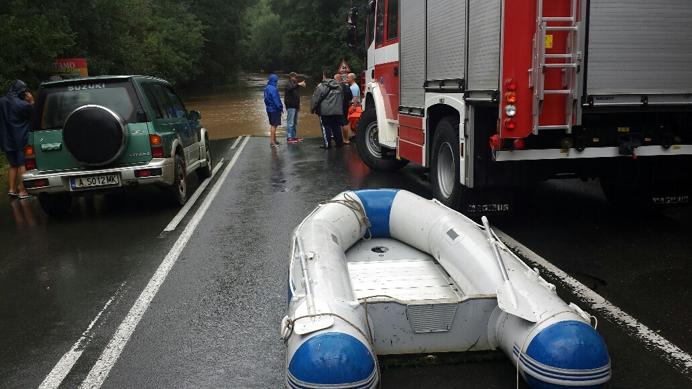
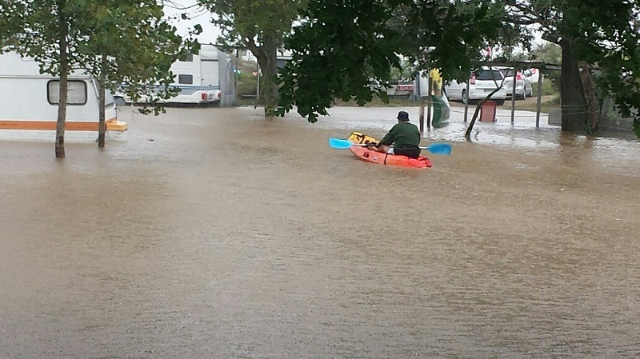

Осигуряване на Безопасна Питейна Вода в Домакинството.
Трябва да знаем, че:
- Първите показатели за замърсяване на вадата са: наличие на плаващи частици,
промяна в цвета, повишена мътност, поява на необичаен мирис или привкус.
- Най-сериозната опасност за здравето е свързана със замърсяването на вода
с микроорганизми. Най-често преносими с питейната вода са стомашно-чревните
инфекции, като дизентерия, коремен тиф, хепатит А, полиомиелит и др.
- Някои химични вещества също могат да причинят неблагоприятни последици за
здравето.
Спазване на Противоепидемични мерки при Хранене
- При приготвяне на храна съдовете за готвене да се измиват само с преварена
или дезинфекцирана вода по някой от гореописаните начини вода.
- Суровите плодове и зеленчуци да се измиват добре с преварена или дезинфекцирана
по гореописаните начини вода.
- Препоръчително е да се консумира само преминала термична обработка храна,
непосредствено след приготвянето. Месо от домашни животни, птици и риба
се консумира след продължителна термична обработка (от 30 минути до 2 часа
и повече зависимост от вида на месото и големината на парчетата месо) и
непосредствено след нея. Да не се консумира месо от травмирани и удавени животни.
- Измивайте яйцата при готвене.Яйцата да се консумират след продължително
сваряване-не по-малко от 15 мин , непосредствено след приготвяне.
- При високи температури на околната среда има висок риск от бърза развала на храната,
поради което храната да се приготвя в количество само за еднократен прием.
- Да се избягва консумацията на съмнителни домашни консерви, особено при нарушаване
целостта на опаковките или промяна на външния им вид. Консервите да се консумират
непосредствено след отварянето им.
- Хранителни продукти трябва да се съхраняват само в плътно покрити съдове, за да се
избегне рискът от преносители на инфекциозни хранителни заболявания-насекоми, гризачи
и др.
- Спазвайте лична хигиена-мийте ръцете си с преварена или дезинфекцирана вода преди
приготвяне и сервиране на храната.
- Болни със стомашно-чревно разстройство не трябва да се включват в приготвяне и
сервиране на храната.
- Ако се появят симптоми на стомашно-чревно заболяване –диария, повръщане, втрисане,
температура, обща слабост, незабавно потърсете лекарска помощ.
Какво Трябва да Знаят Родителите
- От кои реки, язовири и други водоеми близо до вашето населено място може да произлиза
наводнението.
- Подгответе личен багаж с най-необходимите документи, лични вещи, вода (най-добре
бутилирана минерална вода) и продукти.
- Изключете всички електрически и газови уредби.Затворете спирателните кранове за вода.
- Използвайте мобилна или друга връзка да известите близките си или органите на полицията
(тел 166), гражданска защита (национален телефон : 960 10262) за местонахождението си.
- При поройни дъждове не заставайте заедно с децата под мостове, подлези и други съоръжения,
тъй като буйната вода може да ви отнесе.
- При необходимост за напускане на жилището, ако нивото на водата продължава да расте, качете
се заедно с тях на най-горните етажи или покрива.
- Ако се намирате близо до река, язовири, дерета и други водоеми незабавно се отдалечете от
тях и се придвижете към по-високи места. Не пускайте децата си в тези потенциално опасни
места.
- Не правете опити за пресичане на разливи, реки, потоци и дерета.
- Максимално и възможно най-бързо изведете децата от опасната зона.
- Давайте на децата ясни и лесно разбираеми указания как да действат.
- Обърнете повече внимание на болните деца и децата с увреждания, като им окажете физическо
съдействие.
- Потърсете допълнителна помощ и връзки с представители на служби, които биха могли да ви
окажат необходимата помощ с медикаменти, храна, вода, дрехи, подслон, средства за комуникации.

